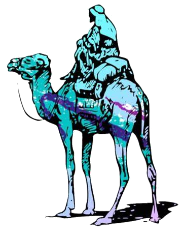

Travelers of Agora Road webring
Agora Road
rss
I-330
rss
idelides
rss
RisingThumb
rss
white VHS
rss
foreverliketh.is
rss
Zeropointfool
~zinricky
rss
sizeof.cat
rss
Aral's Heart
rss
Whitest Kid You'll Ever Know
Walrus Island
rss
Freckle Skies
rss
Microbyte
rss
Dorgon
Andrei
rss
Insomniac
NHKCAFE
STARBREAKER.ORG
rss
Aboboracandy
shrapnelnet
rss
Skelegorg
No.56
rss
yuiui.moe (archived)
splashy
Purple Hello '98
rss
Vulonkaaz
rss
GENOSAD
Kodeb8
scitzoe
Chrysalism
rss
Bresal's Corner
Alixxd
Omnivi
MANPAINT
rss
Kyurem's webroom
The Cozy Cat
rss
regirock.net
SCHIZOPUNK MEDIA
goeshard.org
rss
Sunkud
Xx_TheMilkMan69_xX
Some_Porcupine
Diode.cafe
Jojo's site
rss